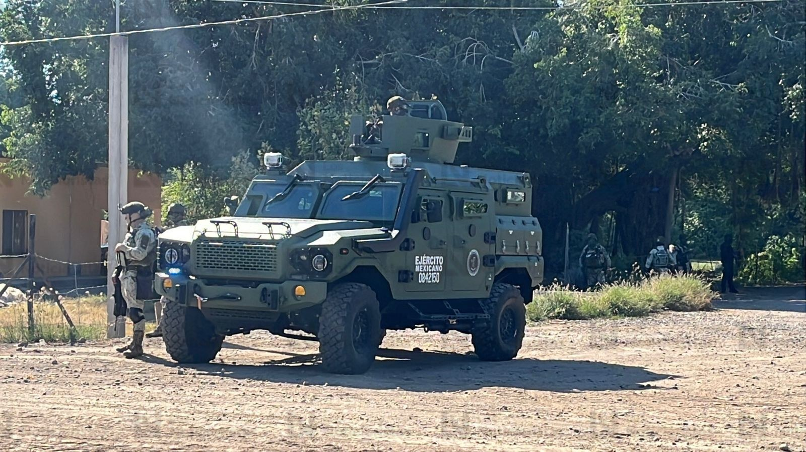

Imagen: Mauricio Valenzuela
La noche del viernes 20 de noviembre, mientras fuerzas federales capturaban en Guasave, Sinaloa, a Fausto Isidro Meza Flores, el Chapo Isidro, la Alianza del Transporte Urbano y Suburbano de Los Mochis decidió que ninguna ruta saldría a la mañana siguiente para proteger a operadores y pasajeros (Luz Noticias, 2026). El sábado, Guasave amaneció con las calles casi vacías, las parroquias suspendieron la catequesis, oficinas y comercios cerraron y, para el lunes, varias escuelas anunciaron que no tendrían clases presenciales (Posta, 2026; Milenio, 2026).
Esas decisiones las tomaron, en buena parte, dirigentes del transporte, párrocos, directivos escolares y comerciantes que evaluaron los riesgos de mantener sus actividades. Hubo militares en las calles y aun así el ritmo lo marcaron los bloqueos de los grupos armados y las precauciones de la gente, algo cercano a las zonas marrones de Guillermo O’Donnell, donde la presencia del Estado no garantiza la vigencia efectiva de su legalidad (O’Donnell, 1993). Estas respuestas pueden entenderse desde la paz cotidiana de Roger Mac Ginty, quien estudia las prácticas con las que personas y comunidades evitan confrontaciones y sostienen cierta convivencia en contextos de violencia (Mac Ginty, 2021).
En Sinaloa esas prácticas tienen historia reciente. En una crónica de septiembre de 2025, a un año de la guerra entre facciones del Cártel de Sinaloa, habitantes de Culiacán contaban que lo primero que hacían cada mañana era revisar los grupos de WhatsApp para saber si durante la noche hubo balaceras o retenes (Noroeste, 2025). Incluso esas redes eran vulnerables; un grupo vecinal que alertaba sobre robos y disparos cerró cuando su administrador recibió amenazas (Nexos, 2025).
Reconocer estas prácticas obliga a mirar lo que cuestan; porque cada clase suspendida o negocio cerrado representa una consecuencia de la inseguridad que recae sobre la población, y ninguna de esas pérdidas aparece en las cifras de homicidios. La Encuesta Nacional de Seguridad Pública Urbana da cuenta de que el miedo persiste en la capital sinaloense. En septiembre, 81.6% de los adultos de Culiacán consideraba inseguro vivir en su ciudad, ante 90.8% de junio. Pese a la mejora, la ciudad sigue entre las diez con mayor percepción de inseguridad del país (INEGI, 2026).
La captura de un objetivo prioritario es un resultado que el gobierno puede presumir. Pamina Firchow plantea que la paz también debería evaluarse con indicadores que definan las mismas comunidades (Firchow, 2018). En Guasave, uno de ellos podría ser tan concreto como cuántos días tardan las escuelas en volver a abrir después de un operativo como éste.
CIPMEX · Centro de Investigación para la Paz México, A.C. · Paz que se piensa, paz que se construye